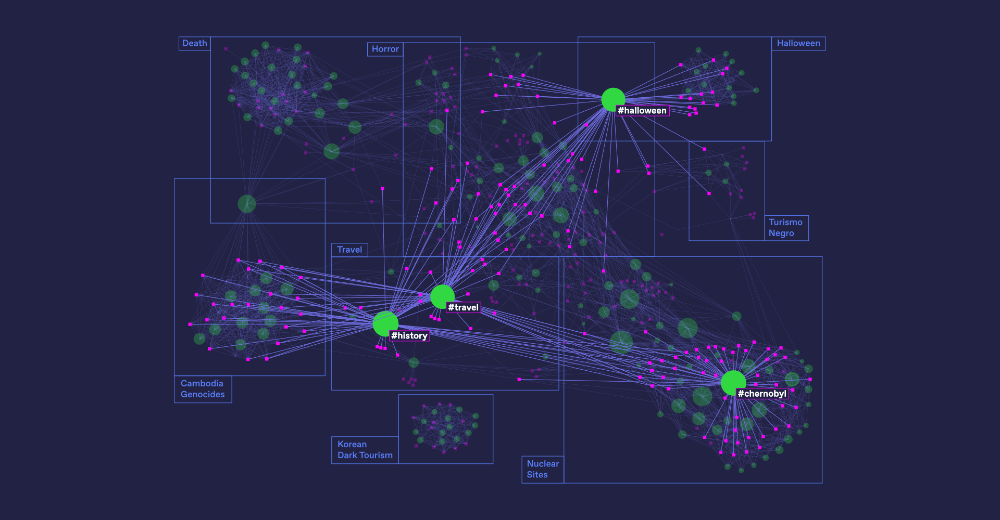
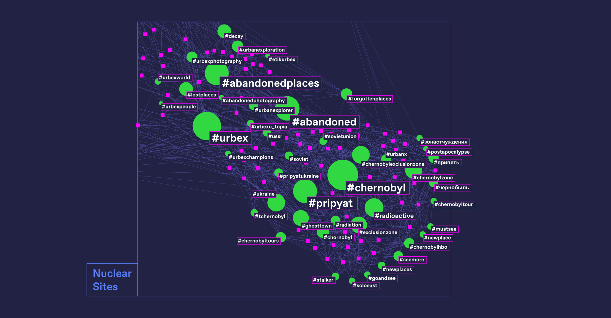
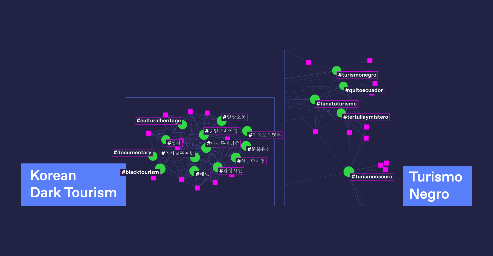
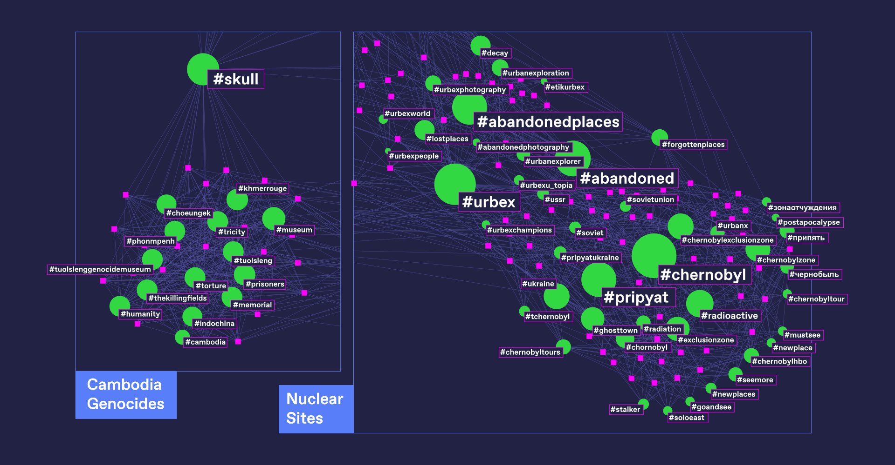

Dark tourism is a movement of people that travel to places historically associated with death and tragedy. We examined the #darktourism Instagram co-hashtags found in the pictures posted on the platform to define which topics are related to this kind of tourism. Every co-hashtag creates a network around itself that defines a sub-topic of dark tourism. Clusters are deeply related one to another and the distribution of relationships is overall homogeneous.
Firstly, a few hashtags related to the main hashtag (#darktourism) are bigger because they are used by the majority of posts. These are #halloween, probably due to the fact that the research has been carried out at this specific time of the year , #travel, #history, #chernobyl. By looking at these terms we can get a sense of how the #darktourism hashtag is used. This kind of tourism is bound to traveling and exploring a place because of its history of death, but it is also associated with fictional and paranormal activities, tying it to a creepy imaginary.
There are several topics derived from the specific use of co-hashtags. The topic is highlighted by the close relationship between co-hashtags. “Nuclear sites” is the category that contains the most used co-hashtags. This means that when looking for dark tourism the probability of encountering an image that concerns Nuclear sites is very high.
Some of the hashtags do not come from English speaking countries: the most present languages after English are Spanish and Korean. In Spanish the hashtag is a direct translation to the language and its represented by the words “turismo” (tourism) and “negro, oscuro” (black, dark). In Korean, words associated to the imagery like “다크투어리즘 ” and “문화유산” are used to express respectively “dark tourism” and “cultural heritage”.
Dark tourism is linked to travel and places where death is the common denominator. We would have expected to find places like Auschwitz-Birkenau, Ground Zero, Hiroshima & Nagasaki because they are renowned places for death. However the most recurring historical moments linked to Dark tourism on Instagram are the Cambodian Genocide and the Chernobyl disaster.
